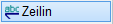
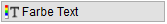
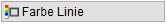
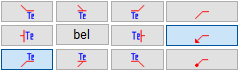
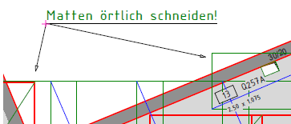
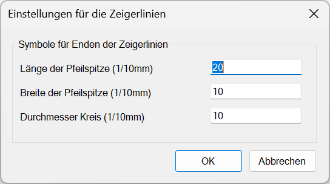
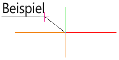
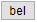
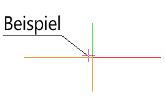
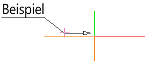

")
")
Einzeltexte oder Textfelder umranden, unterstreichen oder mit Zeigerlinien versehen.
·Mit dieser Funktion kann nur ein kompletter Einzeltext oder ein komplettes Textfeld bearbeitet werden. Zum Unterstreichen von Textpassagen (einzelne Zeichen, Wörter oder mehrere Zeilen innerhalb eines Textfelds) siehe Textfeld einfügen.
·Sollen die Unterstreichungslinien oder die Zeigerlinien verlängert oder verkürzt werden, können Sie den Befehl [Konst1 | Linien → Puvers] verwenden. » Linienpunkt verschieben
·Unterstreichungen und Umrandungen werden immer eine Ebene höher angelegt (bis Ebene 16) als der angeklickte Text. Dadurch werden Elemente nicht durch Freistellungen überdeckt.
§Verwenden Sie die Optionen unterhalb der Abfrage, um Auswahlmethode und Art der Auszeichnung zu wählen:
|
Auszeichnung einer einzelnen Textzeile (in Textfeldern nicht möglich). |
|
Auszeichnung mehrerer Textzeilen. Voraussetzung ist, dass die Textzeilen bündig ausgerichtet sind. |
Unterstreichung mit einer einfachen Linie. |
|
Umrandung mit einer einfachen Linie. |
|
Umrandung mit einer doppelten Linie. |
|
 |
Linienfarbe entsprechend der Farbe des Textes. |
 |
Linienfarbe entsprechend der Stiftauswahl (s. Funktionsbereich). |


2.Textelement wählen
Führen Sie einen der folgenden Schritte aus:
a)Wählen Sie [einzeln] und klicken Sie eine Textzeile an. [Welcher Text].
b)Wählen Sie [Rahmen] und ziehen Sie einen Rahmen um die Textzeilen. [1.Punkt; 2.Punkt].
3.Umrandung und/oder Zeigerlinie anlegen
Je nachdem, ob Sie eine Unterstreichung oder eine Umrandung gewählt haben, werden Ihnen die für die Auswahl gültigen Optionen angezeigt. Wenn Sie den Text lediglich unterstreichen oder umranden wollen, können Sie die Darstellung durch Rechtsklick bestätigen [Linie]. Die Darstellung wird übernommen und Sie können sofort ein weiteres Textelement mit Zeigerlinie oder Umrandung versehen.
Um an dem gewählten Text eine oder mehrere Zeigerlinien anzuordnen:
§Wählen Sie unter Linie die Anordnung der Zeigerlinie an der Umrandung/Unterstreichung und den Linienendtyp (ohne/Pfeil/Kreis).
-Der Ansatzpunkt der Zeigerlinie wird in der Zeichnung durch die Zeichenmarke angezeigt.
-Solange Sie sich im Text-Menü befinden, bleiben der zuletzt gewählte Ansatzpunkt am Text sowie der Linienendtyp der Zeigerlinie erhalten. Wenn Sie das Menü verlassen, werden die Optionen wieder zurückgesetzt.
 |
Beispiel: für links unten an der Umrandung/Unterstreichung und für eine Zeigerlinie mit Pfeilspitze.
 |
§Die Größe der Symbole für die Enden der Zeigerlinien können Sie vorab für jede Zeigerlinie unter im Funktionsbereich einstellen.
Im Dialog können Sie die Länge und Breite der Pfeilspitze sowie den Durchmesser des Kreisendsymbols anpassen. Bestätigen Sie mit OK.
 |
§Klicken Sie in der Zeichnung einen beliebigen Endpunkt für die Zeigerlinie an.
-Um die Linie orthogonal zum Systemwinkel oder zum Drehwinkel des angeklickten Textes zu zeichnen, klicken Sie bei gedrückter Umschalttaste (Shift) in die gewünschte Richtung. Der Winkel wird durch die Lage des Cursors bestimmt.
-Die Zeigerlinie wird von der Umrandung/Unterstreichung bis zum Endpunkt gezeichnet.
-Sie können an dem gewählten Text weitere Zeigerlinien (mit verschiedenen Startpunkten und Pfeilspitzen) anordnen [Linie]. Wenn Startpunkt und Pfeilspitzen für alle Zeigerlinien gleich sein sollen, können Sie die Endpunkte jeweils mit Linksklick anklicken.
Um eine abgewinkelte Zeigerlinie anzulegen
Abgewinkelte Zeigerlinien können durch Aneinanderreihen beliebig vieler Zeigerlinien erzeugt werden.
§Legen Sie zunächst eine Zeigerlinie ohne Pfeilspitze von der Umrandung/Unterstreichung bis zur gewünschten Abwinklung an.
 |
§Klicken Sie auf bzw.

.§Klicken Sie die Zeigerlinie ohne Pfeilspitze in der Nähe des Endpunktes (gewünschten Abwinklung) an. [Startpunkt anklicken].
Der Punkt für die Abwinklung wird in der Zeichnung durch die Zeichenmarke angezeigt.
 |
§Wählen Sie unter Linie die gewünschte Pfeilspitze.
§Klicken Sie in der Zeichnung einen beliebigen Endpunkt für die Zeigerlinie an.
Die Zeigerlinie wird gezeichnet.
 |
Zugehörige Referenzen: